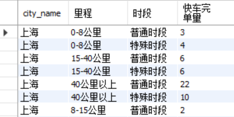

select 完单数,city_name,count(pid)乘客数 from(select pid,city_name, count(distinct d.order_id)完单数 from dw_v_order_base d leftjoin gulf_order_scene g on d.order_id = g.order_id wheredate(finish_time) > date_sub(curdate(),interval7day) and g.scene_l2 like'%火车站%'and d.product_id in (3,4) and d.order_status =5 groupby pid,city_name)t groupby 完单数,city_name;
select city_name, if(distance<=8,'0-8公里',if(distance<=15,'8-15公里',if(distance<=40,'15-40公里','40公里以上'))) 里程, if(hour(finish_time)>=6andhour(finish_time)<21,'普通时段','特殊时段') 时段, count(distinct order_id)快车完单量 from dw_v_order_base d wheredate(finish_time) > date_sub(curdate(),interval1month) and d.product_id in (3,4) and d.order_status =5 groupby city_name,if(distance<=8,'0-8公里',if(distance<=15,'8-15公里',if(distance<=40,'15-40公里','40公里以上'))),if(hour(finish_time)>=6andhour(finish_time)<21,'普通时段','特殊时段');

日留存率
3）2020-05-01快车完单用户在之后一周内日留存率；
筛选日期：date(finish_time) between'2020-05-01' and '2020-05-08'；筛选类型是快车；筛选订单状态是完单；得到符合以上条件的用户u
在用户u的基础上，筛选日期date(finish_time) between'2020-05-02' and '2020-05-08' ，按照完单日期分组，用每个完单日期与05-01的差得到留存天数，对每个分组内的用户数计数得到日留存用户数
日留存率 = 日留存用户数/05-01的总用户数
1 2 3 4 5 6 7 8 9 10 11 12 13
-- 2020-05-01快车完单总用户数 selectdistinct pid from dw_v_order_base d wheredate(d.finish_time)='2020-05-01'and d.product_id in (3,4) and d.order_status =5; -- 2020-05-02至2020-05-08的日留存率 select timestampdiff(day,'2020-05-01',date(d.finish_time)) 留存天数, count(distinct d.pid) 留存用户数, count(distinct d.pid)/(selectcount(distinct pid) from dw_v_order_base d wheredate(d.finish_time)='2020-05-01'and d.product_id in (3,4) and d.order_status =5)留存率 from dw_v_order_base d wheredate(d.finish_time) between'2020-05-02'and'2020-05-08' and d.pid in (selectdistinct pid from dw_v_order_base d wheredate(d.finish_time)='2020-05-01'and d.product_id in (3,4) and d.order_status =5) groupbydate(d.finish_time);
select city_name, driver_id, 司机连续完单天数 from (select city_name, driver_id, 分组日期, count(*) as 司机连续完单天数, max(count(*)) over(partitionby city_name) as 城市最长连续完单天数 from (select *, row_number() over(partitionby city_name,driver_id orderby 完单日期) as 序号, subdate(完单日期,intervalrow_number() over(partitionby city_name,driver_id orderby 完单日期) day) as 分组日期 from (selectdistinct city_name,driver_id,date(finish_time) as 完单日期 from dw_v_order_base) as t1) as t2 groupby city_name,driver_id,分组日期) as t3 where 司机连续完单天数=城市最长连续完单天数;